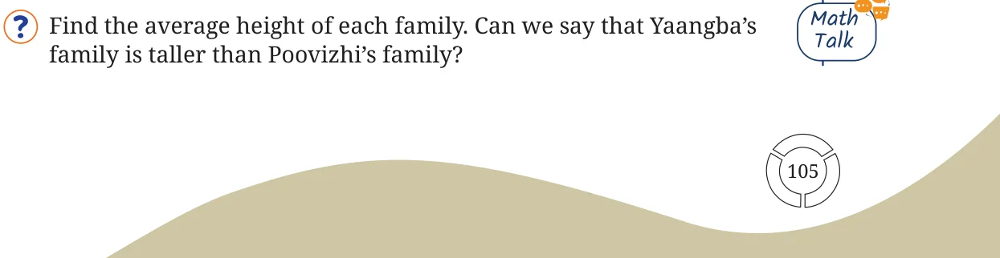
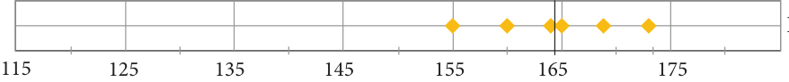
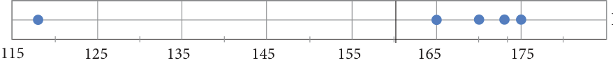
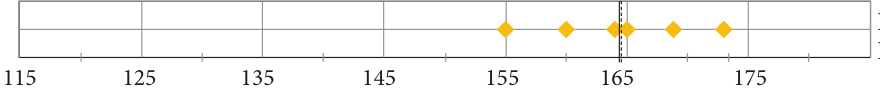
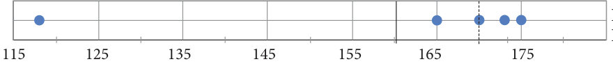
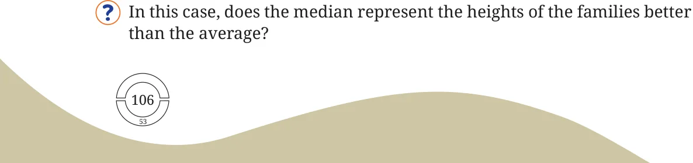
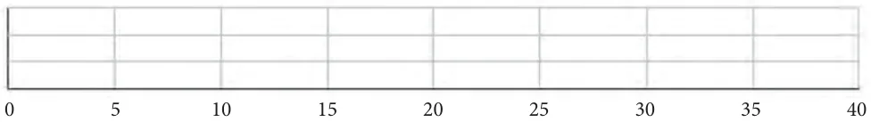

Does the average always give a reasonable summary of the values in a collection? If not, what is an alternative? Let us find out.
Height of a Family
The heights of the family members of Yaangba and Poovizhi are as follows: Yaangba’s family: 169 cm, 173 cm, 155 cm, 165 cm, 160 cm, 164 cm. Poovizhi’s family: 170 cm, 173 cm, 165 cm, 118 cm, 175 cm.

The average height of Poovizhi’s family (160.2 cm) is less than that of Yaangba’s family (164.3 cm). Although most members in Poovizhi’s family are taller, their family’s average height is less because one child is much younger and not as tall as the rest of the family. Their average height, 160.2 cm, is less than the heights of 4 out of 5 members. Here, the average doesn’t seem to represent the data very well.

Mean \(= 164.3 - -\)

Mean \(= 160.2 - -\)
Can you think of any other number that can represent the data better? One way is to sort the data and pick the number in the middle. This number is called the Median. To find the median height of Poovizhi’s family, we first sort the heights \(- 118\), 165, 170, 173, 175.
The middle number in this sorted data is 170. Therefore, the median height is 170 cm. Let us find the median height of Yaangba’s family. Sorting the heights, we get 155, 160, 164, 165, 169, 173.
Since the median is the number in the middle, it will have an equal number of values less than it and greater than it. This data does not have a single middle number because it has an even number of values (6). In such cases, we take the average of the two middle numbers in the sorted data. Therefore, the median height of Yaangba’s family is \((164 + 165) \div 2\)
\(= 164.5\) cm.

Mean \(= 164.3 - -\) Median \(= 164.5 - - -\)

Mean \(= 160.2 - -\) Median \(= 170 - - -\)

In Poovizhi’s family, the height of the youngest child is quite different from the heights of the rest of the family. We call such a value an outlier. Outliers are values which significantly deviate from the rest of the values in the data. Notice how the mean and the median are close to each other in Yaangba’s data, in the absence of any outlier. In Poovizhi’s data, because of the outlier, the mean is much lower than the median.
Find the mean and median in Poovizhi’s data without the outlier value 118. What change do you notice?
Are you a bookworm?
After the summer vacation, a class teacher asked his class how many short stories they had read. Each student answered the number of stories read on a piece of paper, as shown below. Find the mean and median number of short stories read. Before calculating them, can you guess whether the mean will be less than or greater than the median?
Mark the data, the mean, and the median on the dot plot below.

The median value 6 means that half of the class members have read 6 or more stories.
Which of the values would you consider an outlier?
Find the mean and median in the absence of the outlier. What change do you notice? The average may not always be an appropriate representative of data that has outliers. A very high or a very low outlier can significantly impact the sum, thus affecting the average. For example, the 118 cm height in Poovizhi’s family is an outlier at the lower end of the data. And the count of 40 short stories read is an outlier at the higher end of the data. In these cases, we saw that the median was not affected much by the outliers.
Are We on the Same Page?
Do you read newspapers? Have you noticed how many pages a newspaper has on different days of the week - is it the same or different? The list below shows the number of pages for a particular newspaper from Monday to Sunday: 16, 18, 20, 22, 26, 16, 10. Mark the data, the mean, and the median on the dot plot below.
In the three examples we considered - the heights, short-stories, Math and newspaper pages - observe the variability in data when: Talk
- (a)the mean and median are close to each other
- (b)the mean and median are comparatively far apart, with
mean < median
- (c)the mean and median are comparatively far apart, with
mean > median
When the data is more balanced or uniformly spread out the mean, and the median appear to be close to each other. When the outlier is on the lower end, the mean appears to shift in that direction, i.e., mean < median. When the outlier is on the higher end, the mean appears to shift in that direction, i.e., mean > median.
Discuss the effect on the mean and median when outliers are present on both sides. You may take some example data to examine and explain this.
Mean and Median are called measures of central tendency, i.e., the tendency of the values to pile up around a particular value. In other words, they represent the ‘centre’ of the data.